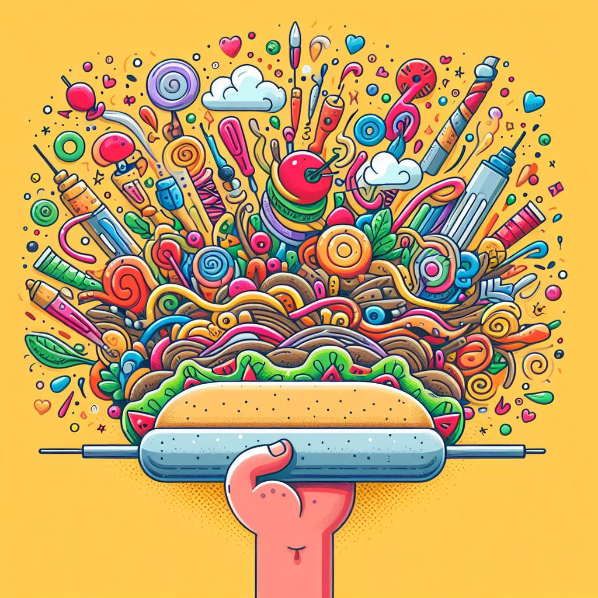
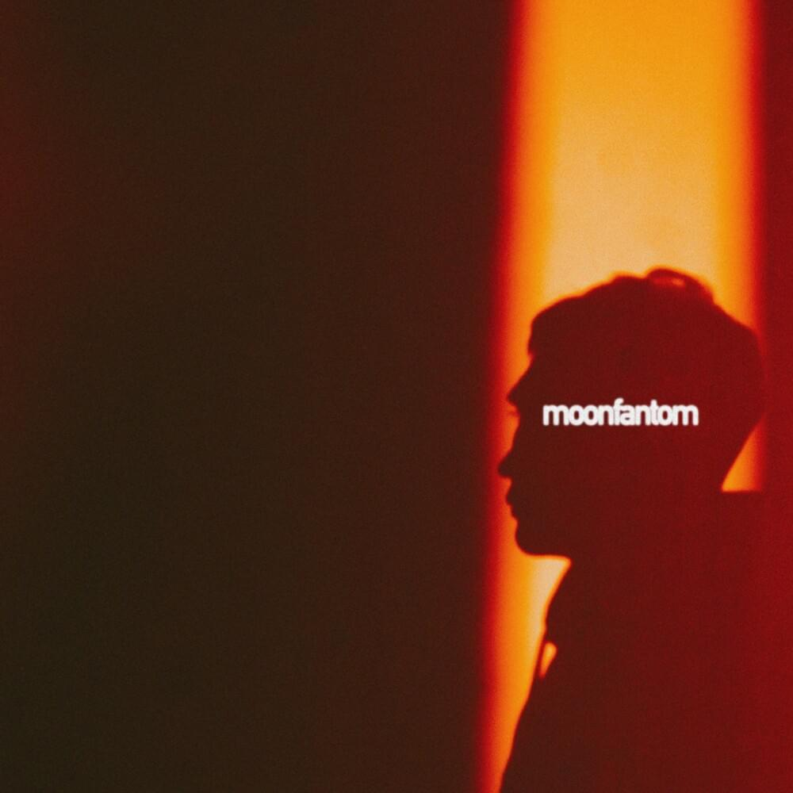

Congratulations!
Today is Valentine's Day, and I don't want to pressure you, but you should already plan how you confess your love to me
What I like in you
1 Name
2 Good cooking
3 Favorite girl
4 Cute sunn
5 And couple other things)

Buys doner for meDid you know that in a recent study, scientists proved that guys whose girls buy doners are 50% happier?

I love you so much that:
- Can show you my google history
- Can resist to eat last pizza slice
- Almost started to like your movie taste

Love potion recipe
You never know when it will come in handy, so I’ll leave it here for you, just in case.
Step 1
Place the house ants on a plate and generously drizzle them with the flavorful sauerkraut syrup.
Step 2
Add some crushed sour berry candy and a pinch of kissed sugar.
Step 3
Whip until fluffy and serve in bee traps to keep the flavor fresh. Go for it and enjoy the result!
Music associated with you
Melodies that I can listen to and remember you, they are filled with a special mood

Name of the song

Name of the song
Name of the song

Name of the song